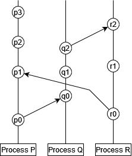
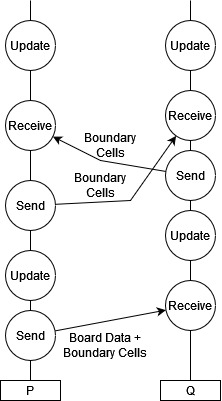
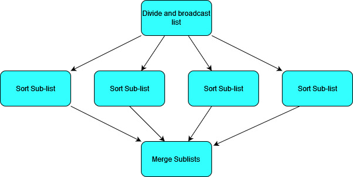
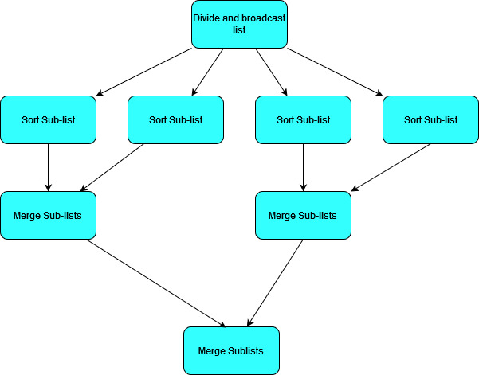
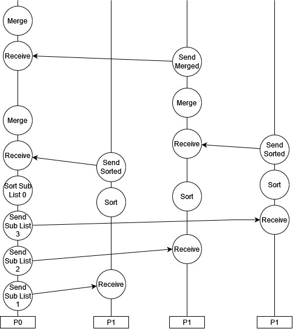

Close
Close

The Distributed Memory Model of Parallel Programming
Last week we looked at the use of shared memory parallel programming. As a reminder, the shared memory model is used when each thread has access to the same memory space.
- Shared memory means that all threads can rapidly access the full data set.
- Can lead to awkward problems like data races.
- Sometimes requires additional structures like mutexes to be introduced.
- A mutex can refer to any solution which means that a variable can only be accessed by a single thread at a time. It is a contraction of “mutually exclusive”.
- The more concurrent threads we have operating on shared memory, the more pressure we put on resources which require access controls like mutexes, which can delay our program execution.
- Shared memory is limited by the number of cores which can share on-chip RAM. This is generally not a very large number, even for high performance computing resources. The more cores we try to connect to a single piece of memory, the more latency there will be for at least some of these cores, and the more independent ports the memory banks will need to have.
In the distributed memory model, we take the parallelisable part of our program and split it up into independent processes. These processes each have their own memory space which cannot be accessed directly by any other process. Processes are however allowed to communicate with one another by sending messages; these can be used to send data back and forth between processes where necessary. This message passing is vital for:
- Initialising each process with the correct information.
- Keeping processes synchronised where necessary (similar to how we used
barrierin OpenMP). - Aggregating results from multiple processes into a complete solution.
Distributed memory programming is incredibly broad and flexible, as we’ve only specified that there are processes with private memory and some kind of message passing. We’ve said nothing about what each of the processes does (they can all do entirely different things; not just different tasks but even entirely different programs), what those processes run on (you could have many nodes in a cluster or a series of completely different devices), or what medium they use to communicate (they can all be directly linked up or they could be communicated over channels like the internet). The distributed memory model can apply to anything from running a simple program with different initial conditions on a handful of nodes in a cluster to running a client-server application with many users on computers and mobile devices to a world-wide payment system involving many different potential individuals, institutions, devices, and software. It can even apply to separate processes running on the same core or on cores with shared memory, as long as the memory is partitioned in such a way that the processes cannot access the same memory. (Remember when you write programs you use virtual memory addresses which are mapped to a limited subset of memory as allocated by your OS; you generally have many processes running on the same core or set of cores with access to non-overlapping subsets of RAM.)
For our purposes, we will focus on code written for a multi-node HPC cluster, such as UCL’s Myriad cluster, using the MPI (Message Passing Interface) standard. We will, naturally, do our programming with C++, but it is worth noting that the MPI standard has been implemented for many languages including C, C#, Fortran, and Python. We will use the Open MPI implementation. We won’t be covering much programming in this section, but focussing on the models that we use and their implications.
Aside: Task Parallelism
It’s worth addressing the fact that different processes or threads don’t need to do identical work. If we need to calculate something of the form:
$y = f(x) + g(x)$
then we can assign the calculation of $f(x)$ and $g(x)$ to separate processes or threads to run concurrently. Then there needs to be some kind of synchronisation (using a barrier or message passing) to bring the results together when they’re both finished and calculate $y$.
This kind of parallelism is called task parallelism, and can be extremely useful when optimising your code. This is particularly important when the calculations $f(x)$ and $g(x)$ are not themselves parallelisable (at least not to the extent which exhausts your resources). Then, rather than having resources standing idle, you can calculate them both at the same time. If however, $f(x)$ and $g(x)$ both parallelise when to use up all your resources with good scaling, then you will do just as well to calculate one of them after the other rather than calculating them both concurrently but twice as slowly.
Basic Structure of an HPC Cluster
The basic model that we need to know is as follows:
- Clusters are composed of nodes.
- Nodes can communicate with one another through the sending of messages.
- The latency associated with message passing may vary depending on the specific structure and connectivity of the nodes. Nodes which are “far apart” in some sense have longer message latency. This factor is difficult to control for unless you are very familiar with your architecture and can control which processes end up on which node, so in general it is not something to worry too much about!
- For now we will treat each node as being able to directly communicate with every other node. We can write programs with this assumption because messages can be passed between any two nodes regardless of exact network topology, so this detail is not important unless we are trying to optimise for message passing latency.
- Nodes can contain multiple cores with shared RAM.
- Cores can run independent processes with separate memory spaces (partitioning the shared RAM).
- Multiple cores can be utilised by a single process with multiple threads and a shared memory approach. In our case this would involve using MPI to spawn and control concurrent processes and using OpenMP to manage threading within a process!
- Threads with shared memory must run on cores within the same node, but processes (which have separate memory) can run on across any nodes or cores.

This understanding of clusters is important for requesting resources appropriately on an HPC system, as we need to understand how our problem / solution can fit onto the resources that we have! However, the way that your processes interact can look quite different to the diagram of a cluster above, as separate processes can run inside a single node for example. In general we can gain a lot of understanding about distributed systems without thinking about the actual architecture itself, but focussing instead on the processes and the messages that they send.
Processes, Message Passing, and Synchronisation
In his 1978 paper on “logical clocks”, Leslie Lamport was inspired by special relativity to illustrate the concept of communicating processes using a kind of space-time diagram.
- Processes are described as a sequence of events.
- Sending a message is a kind of event.
- Receiving a message is a kind of event.

In this diagram time runs from bottom to top (i.e. $p_0$ comes before $p_1$), each vertical line is a separate process ($P$, $Q$, and $R$), and each circle is an event. An arrow between two events is a message, in which the origin is the message send event and the destination is the message receive event.
With this understanding, there is a partial ordering of events:
- Events in the same process happen in sequence, so $a$ comes before $b$ if $a$ appears before $b$ in that sequence.
- Messages must be received after they are sent, so $a$ comes before $b$ if $a$ is an event sending a message and $b$ is the event which receives that same message in a different process.
- The ordering of events is transitive, so if $a$ happens before $b$ and $b$ happens before $c$, then we can say that $a$ happens before $c$.
This ordering of events is only partial, because it does not necessarily allow us to compare all events in all processes to one another. In our example above:
- $p_0$ comes before $p_1$, $p_2$ etc.
- $p_0$ comes before $q_0$, and therefore before $q_1$, $q_1$ etc.
- We cannot say whether $p_1$ comes before $q_1$ or vice versa. Likewise for $r_1$ and $q_1$ and various other pairings.
This is a key property of distributed systems: in general we can’t say in what order all things occur across independent processes. Different processes all run independently and can run a different speeds, or have different amounts of work to do. (Lamport’s paper goes on to describe the limitations of synchronised physical clocks, and an algorithm for establishing a total ordering across events. This total ordering is non-unique, and the partial time ordering is the only ordering enforced by the actual mechanics of the system under study.)
All this is perhaps a lengthy way of saying: if your processes need to be synchronised for some reason, you need to send messages to do it!
For example, let’s take our Game of Life simulation. At each time step we could partition the board and allow each process to advance its section of the board according to the rules of the game of life. In order to be able to advance the board, we actually need to send a bit of extra information too: the part of the board the process needs to advance, and the cells immediately around that part of the board (let’s call these “external cells”), since they will be used in determining the fate of the cells on the boundary of that section. Once we’ve advanced the simulation by one time step though, we can’t go any further: our external cells for each process have not been updated locally, but they get updated in some other process(es)! If we let our process go ahead with this out of date data, we will calculate a wrong result. We need to synchronise by broadcasting our boundary cells to the other processes that need them, and waiting for message from other processes which contain the updated external cells that we need.
Let’s illustrate this game of life example using just two processes, $P$ and $Q$.
- $P$ will send half of the board to $Q$, as well as the external cells that $Q$ needs to update its section.
- $P$ and $Q$ update their sections in parallel.
- $P$ and $Q$ exchange information before continuing on to the next update.

- Here we have one process which must initialise things, which will at the end of all the updates presumably also collect data from the other process to get the final state of the board: this is often the case, but it does not have to be! We could have initialised our processes totally independently and simply allowed them to communicate their boundary cells, with no individual process ever having a complete solution.
- We cannot say which process will begin or complete its update first, or send its boundary cell data first. It does not matter! The processes are kept synchronised as much as is necessary by the message passing.
- If one process is faster than the other or the message passing latency is high, then one or more process will stall while waiting to receive the data that it needs.
Estimating Performance in Message Passing
Message passing naturally incurs a performance overhead. Data communication channels between processes are generally speaking much slower than straight-forward reads to RAM. As such, when designing distributed systems we should bear in mind:
- The frequency of message passing should be kept down where possible.
- The size of messages should be kept down where possible.
- In general, a smaller number of large messages is better than a large number of small messages for a given amount of data.
- This is true in general of data movement, whether through message passing or memory reads to RAM or hard disks. Data movement generally involves a latency ($L$), which is a time overhead for every message regardless of size, and bandwidth ($B$), which is the amount of data that can be transferred in a given time.
- The time for $N$ bytes of data to be transferred in $k$ messages can be estimated using $t \approx N/B + kL$.
- If you have to choose between sending a smaller amount of total data in a larger number of messages, or a larger amount of data using a smaller number of messages, then which you should pick will depend on which term in this expression becomes dominant!
Common Models of Communication in Scientific Programming
There are some patterns of communication that appear frequently in scientific programming, which often doesn’t require the extremely free form approach of more general asynchronous systems!
Divide, Process, and Aggregate using a Parent process
A straight-forward way of handling many problems is to assign one process the “Parent” process. This is your main process which will initialise your other processes, divide work amongst them, and aggregate data from them. It may or may not do such tasks itself!
To give the simplest example of how this kind of model can work, let’s look at it in the context of the merge-sort algorithm that we used in week 7. (Although sorting a list is not a very practical example as the communication overheads will probably be larger than the sorting time in practical cases, but we’ll ignore communication time for now!)
- Merge sort calculates a sorted list by merging together sub-lists which have already been sorted.
- So if we have $N$ child processes, the parent process can divide our list into $N$ chunks of (roughly) equal size, and ask each child to sort that list and send it back.
- The Parent process can then merge all the sorted lists.
We can visualise this as a flow chart like so:

In this case we could actually make things more efficient by allowing some pair-wise communication between child processes to merge sublists.

In this case instead of one thread merging all sub-lists, we can parallelise over them. As we merge lists pairwise, we will end up with an increasing number of processes idling.
In these flow charts we have described what needs to be done but not necessarily which processes do it. We want our Parent process to divide the list up and broadcast it, and we want our parent process to end up with the sorted list at the end, but if we want to make the most of our resources we should probably have the parent process do some of the sorting work as well in this case. If we have 4 processes $P_{0…3}$, we could arrange our processes like so:

This kind of pattern of distributing work and aggregating results often happens in a loop, so that we have the division of a task followed by a central synchronisation, followed by a divided task again and so on.
Communication On Grids
Grids are a common feature in scientific programming, from lattices in solid state physics and grid methods for fluid simulations, to image processing techniques. Lots of data gets defined on grids, and the processing of this data is often dependent on the data immediately surrounding it in the grid. The game of life was a simple example of this very principle!
The highly connected nature of grids gives raises an important question for distributed memory systems: what is the most efficient to divide up a grid so that we minimise our message passing? If we want to minimise the frequency and size of our messages between processes, then we need to minimise the number of cells along the boundary of the regions delogated to each process.

If we want to allocate this grid to four processes, how could we proceed? A simple approach would be to just split it into four vertical sections like so:

Here we’ve coloured the regions in four different colours to show the allocation to different processes. Any cells on the border of the coloured region will need to be broadcast to the neighbouring region(s).
- The red and blue regions each broadcast and receive 8 cells to one other region.
- The yellow and green regions broadcast and receive 16 cells each, split between two regions.
- In total we need to send 48 out of 64 cells, and send 6 messages.
We can divide up this region to reduce the number of cells on the boundary by dividing the grid into squares:
- In the simplest implementation each region needs to send 9 cells in three messages: for example the red region sends it bottom row to the yellow (4 cells), its right most column to the blue (4 cells), and its bottom left cell to the green (1 cell).
- Doing it this way would result in sending 36 cells across 12 messages, so fewer cells but more messages.
- We can do this using fewer messages however if we introduce some blocking i.e. we make some processes wait to receive data before sending data so that they can forward on shared data. This tends to lead to time idling though!
Which solution and message passing pattern is most efficient may depend on your system and the message passing latency and bandwidth properties! If your message passing time is dominated by bandwidth, you should try to minimise the amount of data communicated (i.e. smallest number of boundary cells); if your message passing time is dominated by latency, you should try to minimise the number of messages that you send. For problems which have to communicate large amounts of data, the message passing time will likely be bandwidth dominated and so a smaller boundary is the preferable solution.
Putting Things Together: Performance at Every Scale
Over the last few weeks we’ve looked at a few different ways of approaching performance programming in isolation, but it’s important to remember that we can (and should!) combine these principles where appropriate.
Mixing Distributed and Shared Memory Models
Distributed memory models have a lot of advantages in terms of simplifying memory management and allowing for much more complex systems involving different machines. However, data sharing in distributed systems is slow, which makes them very poorly suited to parallelising certain kinds of problems which involve substantial data sharing. There’d be no point in using a distributed system to transpose a matrix in parallel because passing the matrix components between processes would take longer than the memory reads to perform the transpose itself! But a matrix transpose does parallelise easily in a shared memory system, and if you do an out of place transpose there is no chance of writing to the same place in memory! Many of our basic list and matrix methods make more sense to perform with shared memory parallelism to avoid the messaging overheads.
As an example of a complex problem which can take advantage of multiple levels of parallelism, let’s consider likelihood sampling, a very common need in scientific applications. We have some parameter space which defines our model (for example properties of the universe that we want to measure in physics, or parameters describing a disease in epidemiology) and we have a set of points in this space which represent models with different sets of values for these parameters, and we want to calculate the likelihood of each of these sets of parameters given the data that we have. This is how we infer model parameters from data. Calculating the likelihood will involve generating some observables from a model (i.e. calculating some function of these parameters), and doing some kind of multi-variate Gaussian (to compare to the data).
- Each model evaluation and likelihood calculation is computationally expensive, but only needs a small amount of data to initialise (just the set of parameters)1. This is a perfect example of something which can be allocated to separate processes in a distributed model! Each process is allocated one point in the parameter space and calculates the likelihood. There is no need for communication between processes to calculate the likelihood since they all work on independent points, and they only need to send a message to the parent process when they are done to report the calculated likelihood (again a very small amount of data).
- The likelihood calculation itself will generally involve a lot of steps which need to be ordered (we tend to calculate a lot of functions which depend on the results of other functions etc. in scientific applications) and some linear algebera (for our multi-variate Gaussian we will need to handle the $x^T \Sigma^{-1} x$ term for our covariance matrix $\Sigma$, which itself may need to be generated for each point). This would mean a lot of communication and potential stalls if we were to try to parallelise these operations in a distributed way, but likely some good opportunities for threading when we need to deal with vectors, matrices, integrations and so on. So each process could also be multi-threaded on cores with shared memory.
-
The observable data does need to be communicated to every process, but only once since it does not change. So for each new calculation we only need the new parameter set. ↩